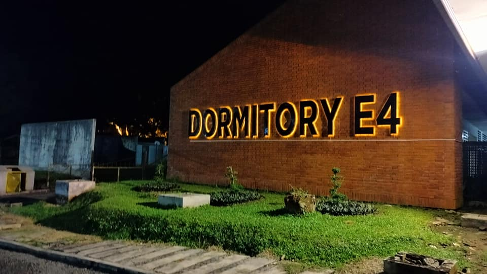
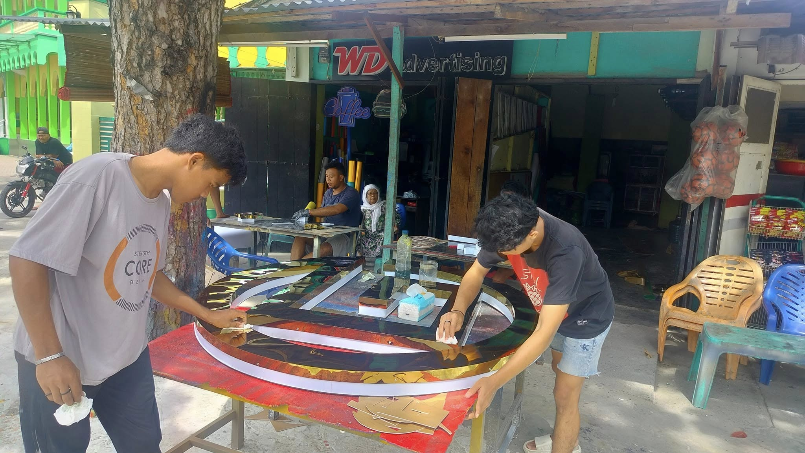
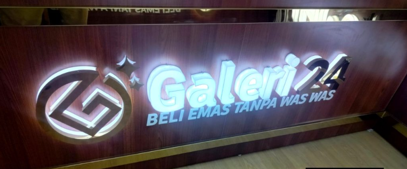
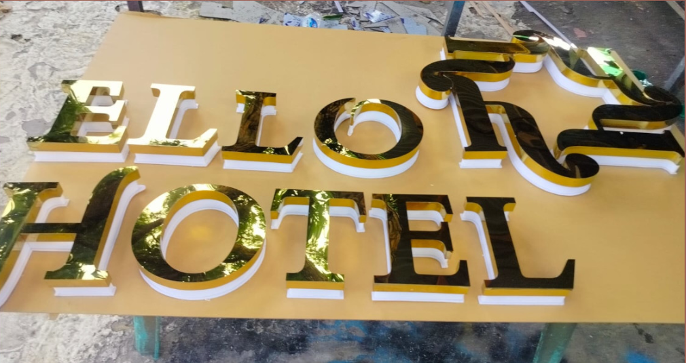

HURUF TIMBUL MEDAN
1. Huruf Timbul Akrilik LED
Huruf timbul akrilik adalah jenis signage yang dibuat dari lembaran akrilik premium—baik akrilik bening maupun solid color yang dibentuk mengikuti desain huruf atau logo tertentu. Material akrilik memberikan tampilan modern, rapi, dan mengkilap sehingga terlihat profesional serta elegan. Huruf timbul akrilik biasanya dipadukan dengan pencahayaan LED backlight atau frontlit untuk menghasilkan efek cahaya lembut dan mewah saat malam hari. Keunggulannya antara lain tahan cuaca, warna tidak mudah pudar, permukaan halus, dan cocok digunakan untuk kafe, butik, hotel, showroom, hingga toko di Medan.
2. Huruf Timbul Galvanil
Huruf timbul galvanil adalah signage yang terbuat dari plat galvanil, yaitu material besi yang telah melalui proses pelapisan seng untuk meningkatkan ketahanan terhadap korosi. Material ini dibentuk sesuai desain huruf atau logo, kemudian dicat menggunakan cat duco agar tampil rapi, halus, dan kuat. Huruf timbul galvanil terkenal karena kekuatannya yang tinggi, harga lebih ekonomis dibandingkan stainless atau akrilik, dan sangat cocok untuk papan nama gedung luar ruangan maupun dalam ruangan.
3. Huruf Timbul Stainless Steel
Huruf timbul stainless adalah signage yang dibuat dari material stainless steel berkualitas tinggi seperti stainless 304 atau 316 (mirror maupun hairline) yang dikenal kuat, tahan karat, dan memiliki tampilan mengkilap elegan. Material stainless dibentuk mengikuti desain huruf atau logo, dirakit secara presisi dan kokoh. Sangat cocok untuk kantor pemerintahan, bank, hotel, maupun perusahaan di Medan karena daya tahannya tinggi dan memberi kesan mewah premium.




